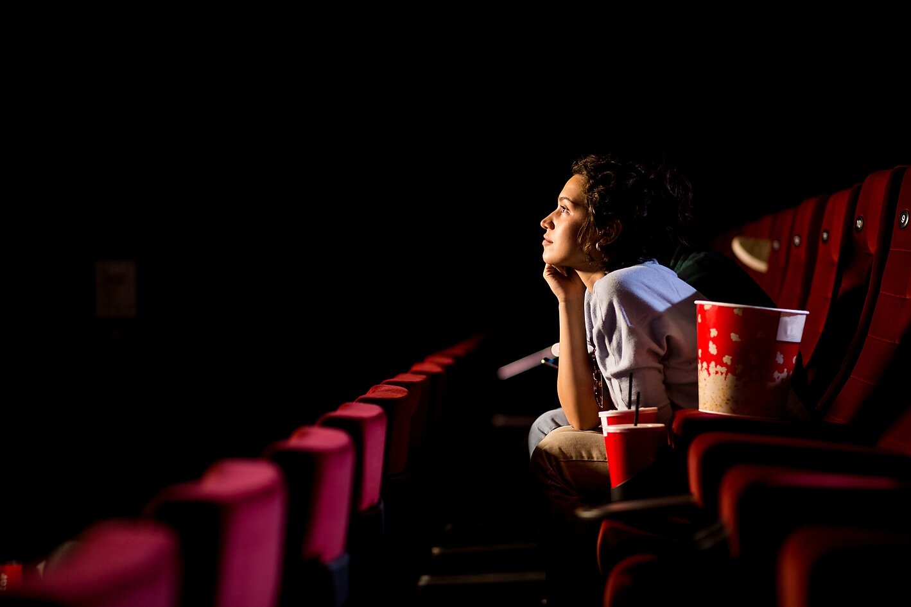

More about me:
My name is Cayden Nestor, and I am a sopomore at El Camino High School in Oceanside, California. I am currently enrolled in a web design class where I am learning HTML and CSS through Dreamweaver. This course has introduced me to the structure and styling of web pages, giving me a foundation I can build on as I continue to practice. I also have prior experience working with Photoshop and Illustrator, which has helped me understand design from both a creative and technical perspective. Using those tools has made it easier for me to experiment with layouts, colors, and visuals in a more polished way.
Outside of class, I enjoy following soccer and keeping up with different matches. My favorite player of all time is Luis Suárez, since I consider him underrated for his skill and impact on the game, but my main team is FC Barcelona, which I’ve supported for a long time. Watching matches is something I enjoy, but I also like playing video games during my free time. Gaming gives me a different kind of challenge and entertainment, and lately, I’ve been spending time on Totally Accurate Battle Simulator (TABS). It’s a fun game to experiment with, and I like figuring out new strategies while seeing the creative and chaotic battles play out. Outside of that, I also enjoy movies, and my favorite right now is the new Superman movie, which stood out to me with its story and visuals.
When I am not focused on school or personal hobbies, I spend time with family and friends. I like meeting up with friends to talk, relax, and enjoy time outside of schoolwork. Family is also a priority, and I often travel to visit relatives in northern California. One of my favorite traditions is talking with my cousin, who shares a birthday with me just one day apart. We always make the most out of that time together. I am also planning to visit family in Mexico soon, which will give me more chances to connect with relatives and experience something different. Alongside that, I keep smaller joys in my routine, like enjoying pasta, which is my favorite food. These interests and experiences shape who I am as a student, friend, and family member.
To create this about me page, I started by adding the information so the viewer knows a little about me. I added the images by finding images on the internet that relate to information I included about me, like soccer, good food, and watching movies. I then styled the images so the they fit with the text like their size and where they are on the page. I then styled everything like how I rounded the images corners and changed the text size.